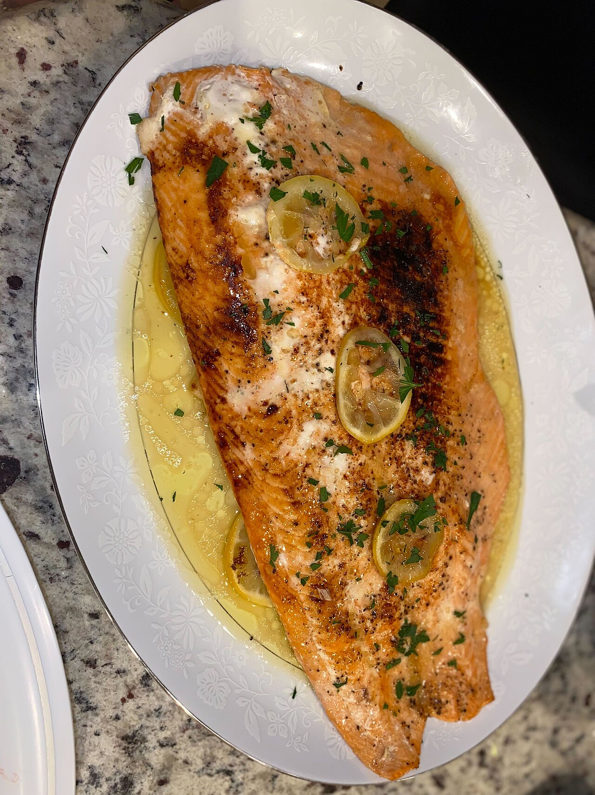
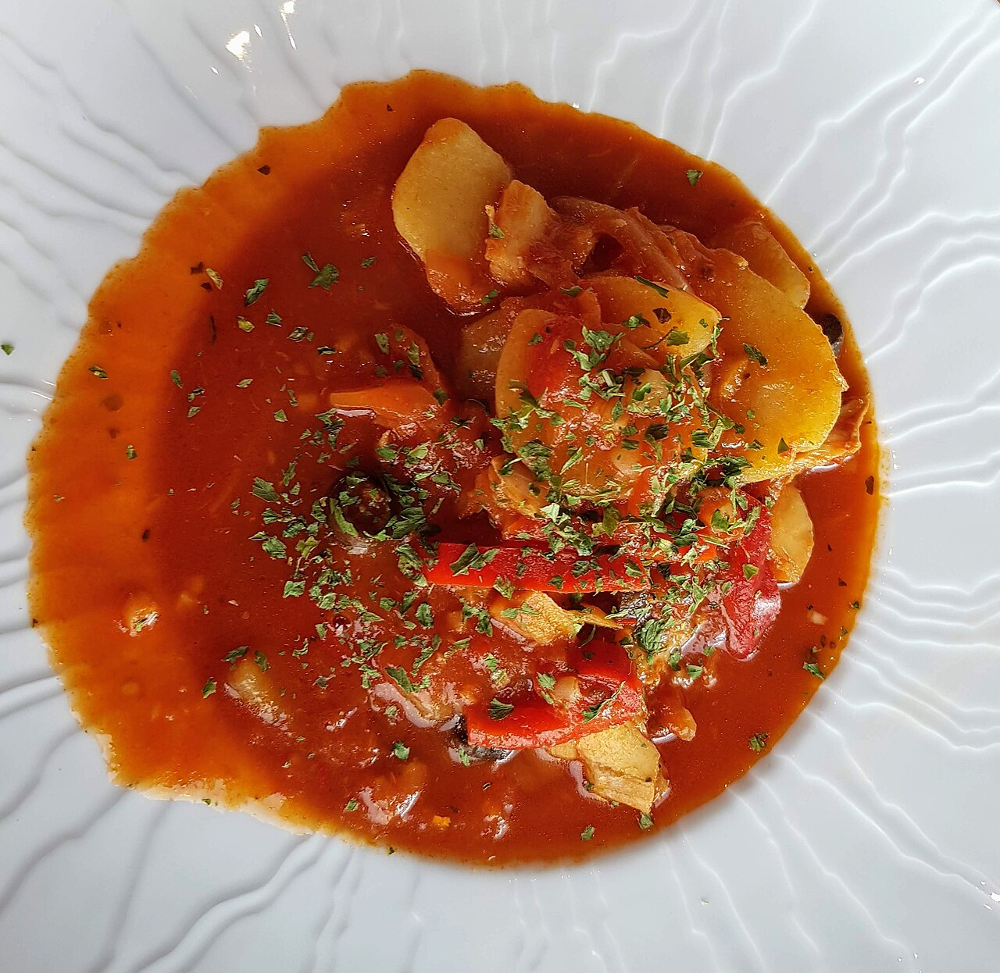
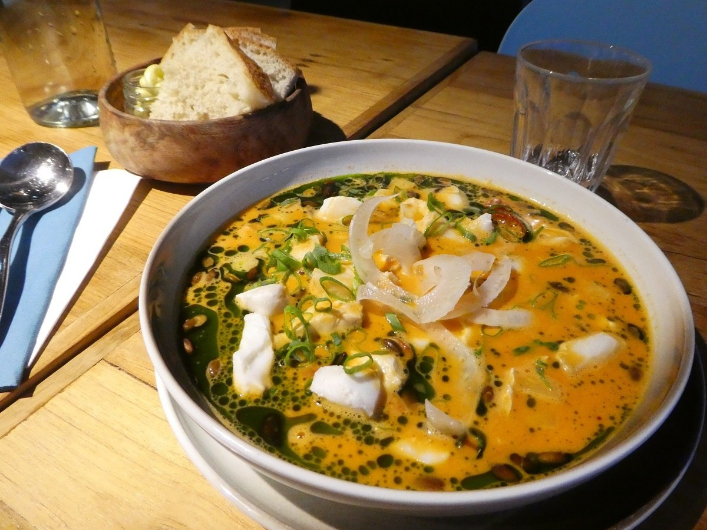
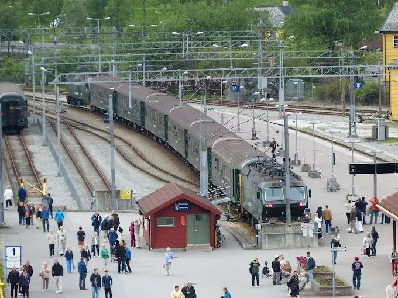
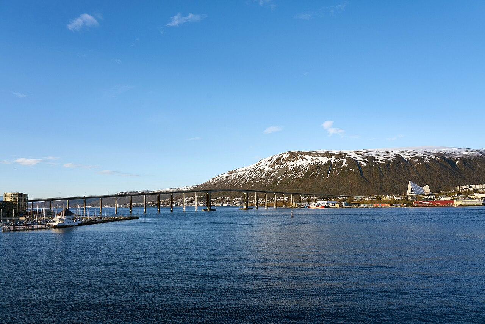
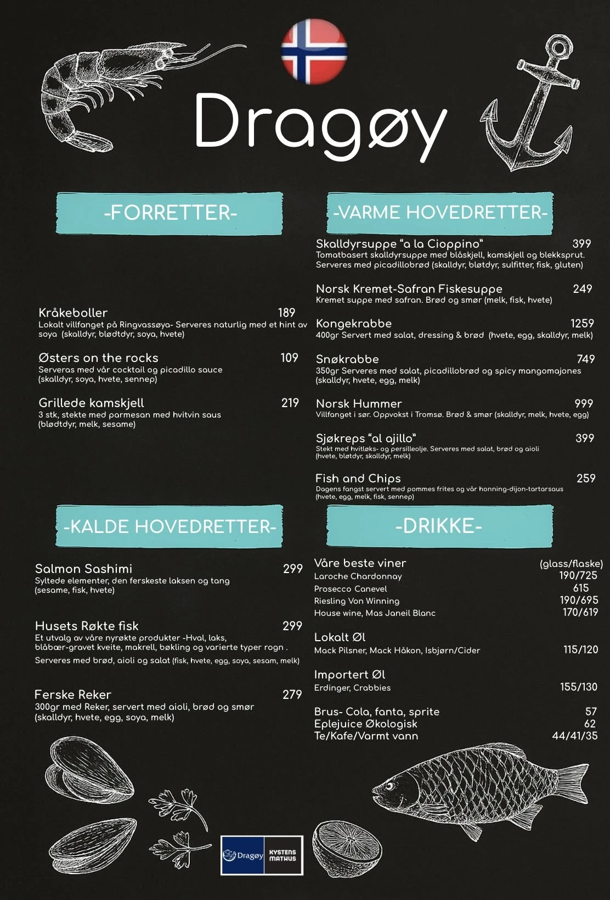
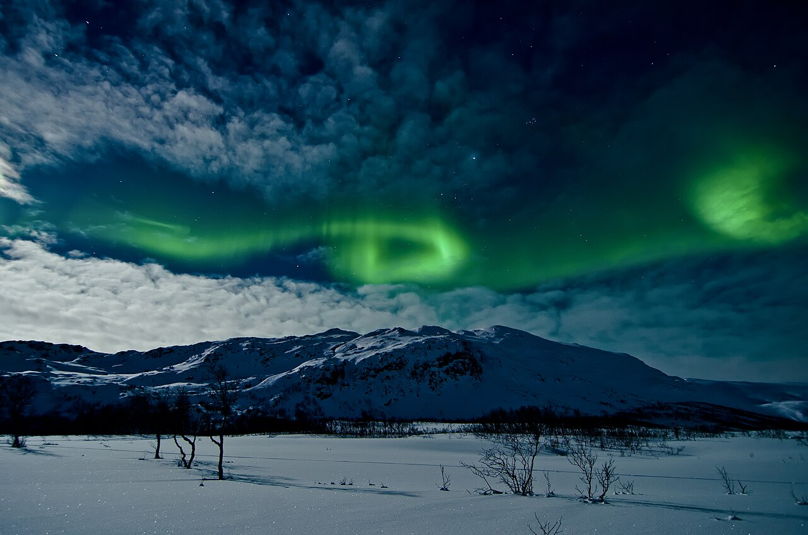
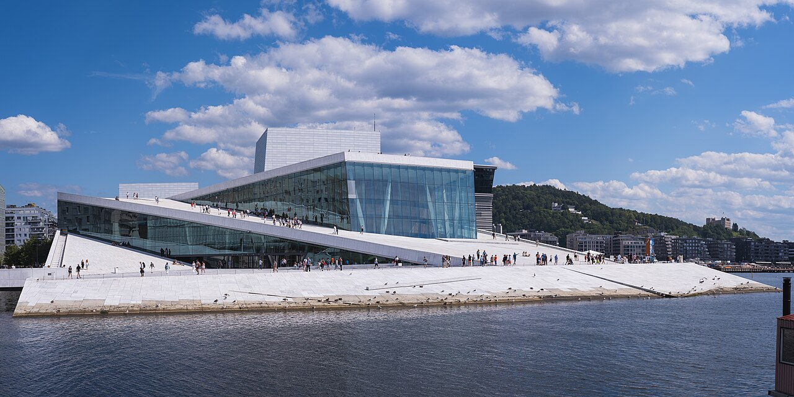
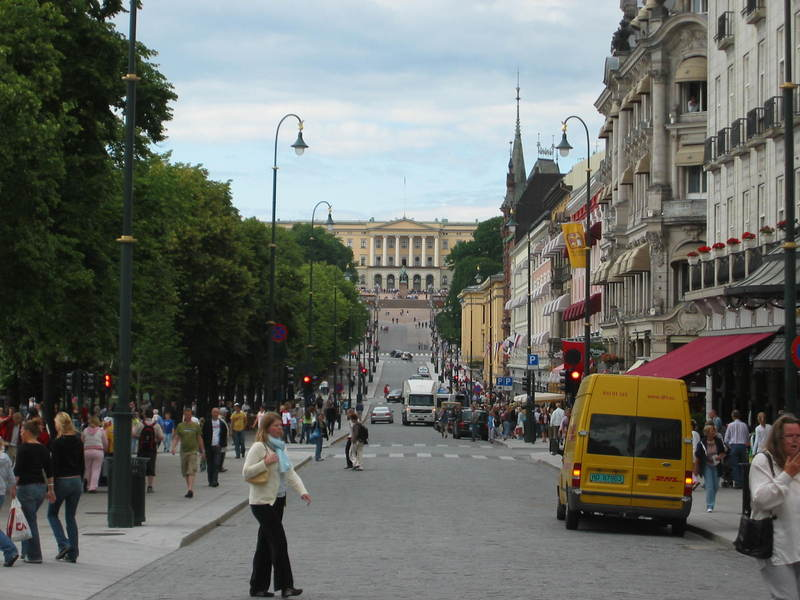

Taste of Norway
🍽️ ノルウェーで食べたいもの
冷たい海で育ったサーモンやニシンなど、新鮮な魚介はノルウェー旅行の楽しみのひとつ。ベルゲンなどの港町では、シーフードや家庭的な煮込み料理も味わえます。




ブラウンチーズの種類
Geitost（ヤイトオスト）はヤギ乳100％で、独特の風味があります。牛乳とヤギ乳を合わせたGudbrandsdalsost（グドブランスダールスオスト）は、よりキャラメルに近い甘さで食べやすいタイプです。どちらもBrunost（茶色のチーズ）の仲間です。
ベルゲンBergen — フィヨルドの玄関口
港を中心に見どころが半径ワンコインに凝縮。ホテル（スカンディック バイパルケン）は魚市場・ブリッゲンから徒歩圏で、到着後の夕方だけでも十分回れます。年間200日以上雨と言われる街なので、雨具とスニーカーは必携。
港と駅、2つのエリアで考える
ベルゲン中心部はコンパクト。旅行者には、見どころが集まる港周辺と、鉄道・美術館に近い駅周辺の2エリアに分けて考えると分かりやすいです。
⚓ 港周辺
ホテルやシーフードレストランが集まり、魚市場、世界遺産ブリッゲンなど主要スポットが徒歩圏内。観光の中心にするならこちら。
🚉 駅・公園周辺
ベルゲン駅から港までは徒歩約20分。フィヨルドツアーや鉄道移動を優先するなら、駅近くの宿も便利です。
ブリッゲンBryggen ／ 世界遺産・ハンザ同盟の木造倉庫群
📍 Googleマップで見る 🔗 公式サイト三角屋根のカラフルな木造家屋が並ぶ街のシンボル。今は土産物店・ギャラリー・レストランに。奥へ続く狭い路地に入るだけなら無料で、中世にタイムスリップしたような迷路が楽しめます。
Special feature · Bryggen
中世の時代にタイムスリップ in ブリッゲン
港に面してカラフルな木造建築が並ぶブリッゲン。建物の間の細い木の路地へ入ると、正面から見るだけでは分からない、中世から続く街の構造を体感できます。
ブリッゲンは、中世ベルゲンで活動したドイツのハンザ商人の生活と交易を伝える世界遺産です。火災のたびに以前の区画や工法を受け継いで再建され、現在の景観は主に1702年の大火後の姿。港に向かって細長い建物が並ぶ、中世以来の都市構造が守られています。
知りたい！ ブリッゲンのQ&A
Q1. ブリッゲンって何？
港沿いに木造家屋が連なる歴史地区です。1350年ごろ、ドイツのハンザ商人がベルゲンに商館を置き、住居・事務所・倉庫として利用しました。現在の建物そのものは後世の再建が中心ですが、街区の形には中世の面影が残っています。
Q2. どんな建物？
木の柱・梁・外壁で造られた2〜3階建ての建物が、細い通路に沿って密集しています。幾度も火災に遭いましたが、そのたびに以前の配置と伝統工法を踏襲して再建されました。木の床を歩くと聞こえる、ギィーというきしみも現地ならではです。
Q3. 外観の文字や飾りはなに？
ファサードに見える文字は、現在入っているレストランやショップなどの看板。動物や人物をかたどった木の像やシンボルも建物ごとに異なるので、正面を見比べながら歩いてみましょう。
Q4. 今は何に使われているの？
現在は地元アーティストの工房、ギャラリー、レストラン、ギフトショップなどとして使われています。木の板をつないだ細い路地は奥まで続き、その途中にも小さな店が点在しています。
ブリッゲン内で探したいもの
- 1666年築の白い石造建築：Arent Meyers Kjeller はブリッゲン最古の完全な形で残る建物。現在はアートスクールとして使われています。
- 広場の「願いの井戸」：投入されたコインはブリッゲンの保存活動に役立てられます。石の縁に刻まれたオーラヴ5世のモノグラムにも注目。
- 木彫りの像と狭い路地：建物の正面に飾られた動物や人物の像を探しながら、迷路のような木の通路を奥まで歩いてみましょう。
フロイエン山Fløyen ／ ケーブルカー Fløibanen で約6〜8分
📍 Googleマップで見る 🔗 公式サイト標高約320mから街とフィヨルドを一望する絶景スポット。山頂にはカフェ・レストラン・土産店・子どもの遊び場・小さな牧場があり、散策路も。歩いて登る地元流の散歩道も人気です。
ローセンクランツの塔 & ホーコン王の館Rosenkrantztårnet / Håkonshallen ／ ブリッゲン隣
📍 Googleマップで見る 🔗 公式サイト中世ベルゲンの歴史を伝える塔と大広間。塔の屋上は街とフロイエン山を見渡す展望台に。周辺の公園・広場は無料で、『アナと雪の女王』の着想の地のひとつとも言われます。
トレクロー二エンTrekroneren ／ 中心部・老舗ソーセージスタンド
📍 Googleマップで見る 🔗 公式Facebook1946年から続く名物のホットドッグ／ソーセージ屋台。トナカイやエルク（ヘラジカ）のソーセージが名物で、リンゴンベリーやカリカリオニオンをのせて食べます。数百円台で北欧のジビエを気軽に味わえ、物価の高いベルゲンで頼れる軽食スポット。街歩きの合間の小腹埋めにぴったりです。
ブリッゲロフテ ＆ ステューエナBryggeloftet & Stuene ／ Bryggen 11・1910年創業
📍 Googleマップで見る 🔗 公式サイトブリッゲンにある、同じ家族が1910年から営むベルゲン最古のレストラン。名物のベルゲン風フィッシュスープをはじめ、魚介やトナカイなどノルウェーの伝統料理を味わえます。口コミでは、干し鱈を使ったバカラオと地元のハンザビールが紹介されています。
シスターハーゲリンThe Hagelin Sisters（Søstrene Hagelin）／ Strandgaten 3
📍 Googleマップで見る 🔗 公式サイト1929年創業の魚料理店＆カフェ。新鮮なハドックを使った伝統のフィッシュケーキ、フィッシュバーガー、野菜と魚のすり身が入ったクリーミーなフィッシュスープなどを、店内でもテイクアウトでも気軽に楽しめます。
魚市場（フィスケトルゲット）Fisketorget ／ 港沿い・ブリッゲン近く
📍 Googleマップで見る 🔗 公式案内サーモン、エビ、タラバガニ、クジラ肉、シュリンプサンドなど。好きな魚介を選んで焼いてもらえ、イートインスペースも充実。大鍋で作る名物パエリアを目当てにする旅行者も。
フロムFlåm — ナットシェル途中の絶景の村

Flåm Station — ご提供写真住民わずか500人ほどの小さな村は、アウルランフィヨルドとフロム渓谷の山々という豊かな自然に囲まれ、フィヨルドをより楽しめるアクティビティや見どころが満載。フロムとは「山間の小さな平地」という意味です。
フロム鉄道博物館Flåmsbana Museet ／ フロム駅のすぐ隣・入場無料
📍 Googleマップで見る 🔗 公式サイトフロム鉄道の歴史と、山岳鉄道を造り上げた難工事を紹介する博物館。旧駅舎を利用した館内には、実際に使われた機関車や入換用車両、保線用トロッコのほか、写真・映像・資料が展示されています。ギフトショップも併設され、鉄道に乗る前の予習や待ち時間の見学にぴったりです。
フルクロア・カフェ（現 フィヨルド ビストロ）Furukroa Kafé / Fjord Bistro ／ 駅・港のすぐそば
📍 Googleマップで見る 🔗 公式サイトフィヨルドに面したカジュアルなカフェレストラン。夏はテラス席が人気で、サンドイッチ、バーガー、ピザなどを楽しめます。ガイド掲載時の価格は1品120NOK～。現在はFjord Bistroの名称で営業しています。
資料掲載の営業時間：6月～9月上旬は毎日8:00～20:00、9月上旬～5月は毎日8:00～18:00、休みなし。
2026年9月18日：公式案内では8:00～19:00。営業時間は変更される場合があるため、来店前に公式サイトで確認してください。
駅前のベーカリー / Coopパン・軽食 ／ 短時間ランチ向き
📍 Googleマップで見る 🔗 公式サイト港・鉄道の出発前は混みやすいので、パンは早めに購入するのが吉。店数が多くなくフェリー待ちの人で混み合うため、スーパー Coop で軽食を調達してフロム鉄道の車内で食べるのも時短の手です。
エーギル ブリュッゲリ パブÆgir Bryggeri Pub ／ フロム渓谷の水で醸す自家製ビール
📍 Googleマップで見る 🔗 公式サイト北欧神話の神「エーギル」を冠したクラフトビール醸造所。ヴァイキング風の内装に大きな暖炉があり、迷ったらビールのテイスティングセットを。多くの旅行者が下船後の待ち時間に立ち寄る人気店です。
- 次のフロム鉄道（16:00発）は自由席。滝ショースフォッセンが見える進行方向右側の席が人気なので、早めにホームで並ぶのがおすすめ。
- フロム鉄道は途中ショースの滝で約5分停車し、ホームに降りて撮影できます（妖精のパフォーマンス演出も）。車内は多言語の日本語解説あり。
- スーツケースは各自持ち運び。身軽な服装＋防風ジャケットで。フィヨルドのデッキ・山岳部は冷えます。
- 📒 参考：Cafe de Cooky（ショースの滝）/私の海外鉄道旅行（座席）
トロムソTromsø — 北極圏のパリ、オーロラの街

Tromsø — Virtual-Pano / CC BY-SA 4.0「北のパリ」と呼ばれる北極圏最大の街。昼は街歩き＆展望、夜はオーロラという組み立てがしやすいのが魅力。ホテル（クオリティ サガ）はバス停が目の前で、ミニバスチェイスの集合にも便利です。中心部はコンパクトですが、目的地は見た目より遠いのでバス活用を。
- 北緯約70度・北極圏最大の町。中心はトロムソ島（Tromsøya）にあり、北極探検・極地研究の基地として栄えました。1968年創立の世界最北の大学には約1万人の学生が在籍しています。
- 中心部は約500m四方。アムンゼン像の広場を中心に、ホテル、レストラン、観光案内所、長距離バスターミナルが集まり、徒歩で十分回れます。
- 島をつなぐ3つのルート：本土へ渡るトロムソ橋（1,036m）と海底トンネル（3.5km）、空港前を通りクヴァロヤ島へ向かうサンネスン橋（1,220m）があります。
- オスロから飛行機で約1時間50分。空港から市内は約15分で、Flybussen（目安125NOK）のほか、市バス40番・42番も利用できます。
- 市バスの料金目安：シングル44NOK〜（90分有効）、1日券126NOK、7日券294NOK。券売機、Troms Billett アプリ、観光案内所で購入できます。
- 観光案内所は Storgata 83。北極圏到達証明書 Polarsertifikat（目安95NOK）の購入、オーロラツアーの予約、バスチケットの購入が可能です。
- 中心部の主なバス乗り場：Storgata東側は26・28番、Havnegata側は20・24番、Sjøgata側は20・21・34番が目安です。
北極教会Ishavskatedralen（トロムスダーレン教会）／ 対岸・バスで橋を渡る
📍 Googleマップで見る 🔗 公式サイト三角屋根とステンドグラスが美しい街のシンボル。全面ガラス張りで、日照の少ない時期も内部が自然光で明るく照らされます。ゴシック様式とは対照的なシンプルでモダンな造りで、モザイク画のようなステンドグラスが見どころ。橋を渡った対岸にあり、ケーブルカーとセットで回るのが定番です。
フィエルハイセン（ストールシュタイネン山）Fjellheisen ／ ケーブルカー約4〜5分・標高421m
📍 Googleマップで見る 🔗 公式サイトトロムソ島・街並み・フィヨルドを一望する絶景展望台。白いトロムソ橋や三角屋根の連なりが美しく、晴れた夜はここからオーロラを狙う人も。山頂にはレストランと屋外展望デッキがあります。
DragøyKystens Mathus・Stortorget 1 ／ 魚屋＆シーフード軽食
📍 Googleマップで見る 🔗 公式サイト新鮮な魚介を扱う魚屋に併設された、気軽なシーフード軽食店。フィッシュ＆チップス、フィッシュスープ、魚のケーキ、エビなどを、トロムソ海峡を眺めながら味わえます。レストランより手頃に魚料理を楽しみたいランチに向いています。

メニューの日本語訳（全21品・価格つき）
MATHALLENGrønnegata 60 ／ 北ノルウェー料理
📍 Googleマップで見る 🔗 公式サイト北ノルウェーの地元食材を、現代的な料理で楽しめるレストラン。魚介や肉料理のほか、ランチと季節のコースがあります。旅行記で紹介されている、タラと野菜がたっぷり入ったフィッシュスープも参考にしたい一品です。
世界最北のマクドナルドMcDonald’s Tromsø・Storgata 70 ／ 世界最北店
📍 Googleマップで見る 🔗 公式サイトトロムソ中心部にある、世界で最も北に位置するマクドナルド。2024年3月にオープンし、入口には「THE NORTHERNMOST McDONALD’S IN THE WORLD」の表示があります。観光の記念撮影や、街歩き途中の気軽な食事・休憩に便利です。
Art Café BistroRichard Withs plass 2（クオリティ・ホテル・サガ地下）／ 北欧・欧州料理
📍 Googleマップで見る 🔗 公式Facebookクオリティ・ホテル・サガの地下にある、家族経営の小さなビストロ。壁一面に地元アーティストの作品が飾られ（購入も可能）、手描きのテーブルが並ぶ個性的な内装です。キングクラブのビスクやトナカイの煮込み（フィンビフ）など北ノルウェーらしい料理が手頃な価格で味わえ、自家製パンとフレーバーバターから始まる丁寧な仕事に定評があります。トロムソのカフェ195軒中5位、4.6〜4.7点の高評価。
メニューの日本語訳（全21品・価格つき）
ラケッタRaketten Bar & Pølse ／ 中心部ストルトルゲット広場・世界最小級のバー
📍 Googleマップで見る 🔗 公式Facebook1911年から広場に立つ、ノルウェーで最も小さいとも言われる屋台バー。名物はトナカイソーセージのホットドッグで、寒い夜の街歩きの合間にぴったり。数百円台で温かいものが食べられ、オーロラ待ちの前の腹ごしらえにも便利な、地元の名物スタンドです。
カフェ休憩（シナモンロール）Risø／Kaffebønna など中心部のカフェ
📍 Googleマップで見る 🔗 公式サイト北極圏の街だけにカフェ文化が根付き、こだわりの一杯を出す店が点在。Risø Mat & Kaffebar や広場の Kaffebønna は、シナモンロールなどの菓子とコーヒーで暖まる定番。日照の短い季節、屋内でほっと一息つける場所を押さえておくと街歩きが快適になります。

Aurora, Tromsø — Andi Gentsch / CC BY-SA 2.0- 9月でも見えます。オーロラのシーズンは9月中旬〜4月上旬。「晴れて空が暗ければ9月でも見られた」という日本人旅行者の実体験ブログが複数あります。
- 目安は3日に1回・1晩あたり50〜70%で、実際は天候（雲）次第。9/19・20の2夜チェイスは確率を上げる好判断です。
- ミニバスチェイスの利点は、雲を避けて晴れ間へ移動できること。市内でも見えることはありますが、光害の少ない郊外が有利。
- 市内で軽く狙うなら、テレグラフブクタ（海側が開けて暗い）やケーブルカー山頂が定番。強めのオーロラなら街中でも視認できたという声も。
- 防寒：沿岸部で気温自体は穏やか（9月はおおむね0〜9℃）ですが、海風で体感が大きく下がります。防風・防水＋重ね着で、足元の冷え対策（ホッカイロ）も。
- 撮影：スマホでは写しにくいので、可能ならカメラ＋三脚があると満足度が上がります。当日は「まず雲、次にKp指数」の順でチェックを。
- 📒 参考：Kazuの気ままな旅（9月）/ホッキョクナビ（確率）/ホッキョクナビ（市内観賞）/AT_YAMAG（ツアーなし）/ぱんだるま（ツアーレポ）/まんださんの旅行記/北欧、暮らしの道具店
オスロOslo — 水辺のアートと現代建築

Oslo Opera House — Christian David / CC BY-SA 4.0オスロ中央駅を起点に、港側のビヨルヴィカ、市庁舎、王宮周辺を回るコンパクトな計画。実際に観光できるのは9/21（月）の午後と9/22（火）の午前です。市内の乗り物はトラムと地下鉄だけを使い、停留所から入口までの短い徒歩を組み合わせます。
- 9/21（月）：14:30ホテルに荷物を預ける → トラム19番でBjørvika → 15:00〜17:15 MUNCH → 17:20〜18:00 オペラハウス外観・屋上 → 18:05〜18:50 オスロ公共図書館。
- 9/22（火）：8:15チェックアウト → トラム12番でKontraskjæret → 9:00〜9:45 オスロ市庁舎 → トラム12番でSolli → 10:15〜11:10 王宮外観・王宮公園 → Nationaltheatretから地下鉄で中央駅へ。
- 空港には14:00までに到着：11:30頃から昼食、12:30に荷物受取、13:10頃にOslo SからFlytogetまたはVyに乗り、13:35〜13:50頃の空港着を目指します。
- 国立美術館とノーベル平和センターは、この短い日程では見送ります。運行変更があるため、乗車前にRuter公式で乗り場と時刻を確認してください。
オスロ・オペラハウスOperahuset ／ 中央駅から徒歩すぐ・屋根に上れる
📍 Googleマップで見る 🔗 公式サイト白い大理石の傾斜した屋根を歩いて上れる、世界でも珍しい建築。氷山を思わせる建物は海辺の風景によく映え、屋上からオスロフィヨルドと街並みを無料で一望できます。今回はMUNCHの後、17:20〜18:00に外観と屋上を見学します。
ムンク美術館MUNCH ／ オペラハウス隣・13階建て
📍 Googleマップで見る 🔗 公式サイト2021年にビヨルヴィカへ移転した13階建ての美術館。「叫び」「マドンナ」などの代表作に加え、企画展、ショップ、カフェ、展望スペースもあります。今回は月曜15:00〜17:15に鑑賞します。
オスロ公共図書館Deichman Bjørvika ／ 月〜金曜8:00〜22:00・入館無料
📍 Googleマップで見る 🔗 公式サイト地上5階のモダンな公共図書館。シアタールーム、3Dプリンターやミシンを備えたワークスペース、カフェなど、図書館を超えた設備が充実しています。今回はオペラハウスの後、18:05〜18:50に館内と眺望スペースを見学します。
オスロ市庁舎Rådhuset ／ 毎日9:00〜16:00・入場無料
📍 Googleマップで見る 🔗 公式サイトノーベル平和賞の授賞式会場として知られる市庁舎。1階大ホールを囲む巨大壁画のほか、2階ではノルウェーの歴史や文化を表した壁画・タペストリー、ムンクの油彩画「人生」を展示する「ムンクの間」を見学できます。今回は火曜の開館9:00に入館し、9:45まで見学します。
王宮の外観・王宮公園Det kongelige slott / Slottsparken ／ 外観と公園は無料
📍 Googleマップで見る 🔗 公式サイトカール・ヨハン通りの西端、小高い丘の上に立つノルウェー王室の宮殿。正面ではカール・ヨハン王の騎馬像と衛兵を見られ、振り返ると通りの先にオスロ中心部が広がります。王宮を囲む王宮公園には芝生、花壇、池、古木があり、街の中心とは思えない落ち着いた散策を楽しめます。
カールヨハン通りKarl Johans gate ／ 中央駅〜王宮を結ぶ約1.3km

📍 Googleマップで見る 🔗 公式案内大聖堂・国立劇場・グランドホテルが並ぶメインストリート。西半分は歩行者天国で、カフェや小さなショップ巡りが楽しい。王宮側は小高く、振り返ると駅方向へ街が広がる眺めが気持ちいいです。
The SalmonStrandpromenaden 11 ／ サーモン尽くし・港沿いテラス
📍 Googleマップで見る 🔗 公式サイトその名の通りサーモン専門。ホットスモークドサーモンは「ふわふわで脂がのって美味しい」と評判で、中心地でアクセス良好。平日ランチなら予約なしでも入りやすいという声。ランチ1皿4,000円ほどが目安です。
Louise Restaurant & BarStranden 3 ／ アーケルブリッゲの港側
📍 Googleマップで見る 🔗 公式サイト港をさらに進んだ先のシーフード店。「サーモンのトリュフ刺身ポン酢」など和のひねりを利かせたメニューも。夜遅め（20:30過ぎ）でも予約なしで入れた、という体験談があります。
Oslo Street Food / Mathallenフードホール ／ 比較的リーズナブル
📍 Googleマップで見る 🔗 公式サイト世界各国の料理が集まる屋内フードホール。物価の高いオスロで気軽に食べたいときの定番で、観光の合間のランチや軽めの夕食に。ノルウェーはコーヒー大国なので、街歩きに疲れたらカフェやシナモンロールの休憩も◎。
フィスケリエットFiskeriet Youngstorget ／ Youngstorget 2b ／ 魚屋併設の食堂
📍 Googleマップで見る 🔗 公式サイト鮮魚店が営むカジュアルなシーフード食堂で、名物はフィッシュ&チップスやフィッシュスープ。高級店より気軽な価格帯で、しっかり魚を食べたいランチに便利。中心部の Youngstorget 広場に面し、観光の動線に組み込みやすい一軒です。
シーヴェルキオスケンSyverkiosken ／ Maridalsveien 45 ／ 昔ながらのホットドッグ売店
📍 Googleマップで見る 🔗 公式案内オスロに残る数少ない伝統的なpølse（ホットドッグ）キオスク。ロンパ（薄いポテトブレッド）で巻くローカルスタイルや、カリカリオニオン・シュリンプサラダなどのトッピングが名物。物価の高いオスロで、数百円で小腹を満たせる庶民派の味です。
- ホテルはオスロ中央駅舎内。9/21は14:30に荷物を預けて出発し、9/22は8:15にチェックアウトして荷物を預けます。
- 市内移動はトラム・地下鉄のみ。月曜はトラム19番、火曜はトラム12番と地下鉄を利用し、停留所から施設までは短い徒歩です。
- 9/22は13:10頃にOslo Sを出発し、14:00までに空港着。中央駅↔空港はFlytogetまたはVyで約20〜25分。
- 広場・駅・港周辺はスリ・置き引きに注意。バッグは前に、貴重品は分散して。
- 📒 参考：ももへこさんの旅行記/hirominさんの旅行記
スーパーマーケットSupermarket — 物価の高い国での食費対策
外食が1皿4,000〜5,000円のノルウェーでは、スーパーの活用が旅の財布を大きく助けます。1日1食はスーパーの惣菜やサンドイッチで軽く、が定番。サンドイッチ・サラダ・パン・果物・チーズなどが手頃で、朝食やフロム鉄道・空港での軽食調達にも便利です。以下は旅行者がよく使う主要チェーンです。
キーウィKIWI ／ 緑の看板・最も見かける格安チェーン
📍 近くの店舗を探す 🔗 公式サイト緑の看板が目印の全国チェーンで、街なかで一番よく見かけます。価格が安く営業時間も長め（夜遅くまで開いている店も多い）ので、旅行者の"とりあえずここ"的存在。惣菜・サンドイッチ・パン・果物・水などが揃い、トロムソやオスロの中心部にも店舗があります。
レマ1000Rema 1000 ／ 青い看板・シンプルな激安店
📍 近くの店舗を探す 🔗 公式サイトKIWIと並ぶディスカウントの二大巨頭。品揃えを絞って価格を抑えるスタイルで、パンや乳製品、基本の食料品が安く買えます。KIWIと見つけた方へ、くらいの感覚で使えます。
コープCoop（Extra／Prix／Mega／Obs）／ 大小さまざまな協同組合系
📍 近くの店舗を探す 🔗 公式サイト店舗形態が幅広い協同組合系チェーン。Coop Extra は割安、Coop Mega／Obs は品揃え豊富と、看板で規模がわかります。フロムの村にも Coop があり、ナットシェルの待ち時間の軽食調達に便利でした。
メニーMeny ／ 品揃え最強・惣菜と鮮魚コーナーも
📍 近くの店舗を探す 🔗 公式サイトディスカウント系よりやや高めですが、品揃えは随一。惣菜・寿司・サラダバー・鮮魚や精肉のカウンター、チーズやお土産向きの食品も充実しています。ブラウンチーズやチョコなどお土産のまとめ買い、ちゃんとした惣菜で食事を済ませたいときに重宝します。
- ブラウンチーズ（Brunost／Gudbrandsdalsost）：定番土産。軽くて配りやすく、スーパーなら土産店より割安。チーズスライサーも一緒に。
- フレイアのミルクチョコ（Freia Melkesjokolade）とクックルンシュ（Kvikk Lunsj）：国民的チョコ。ハイキングのお供＝クックルンシュはお土産にも人気。
- 魚の缶詰・チューブ入りキャビア（Kalles／Mills）・フィッシュボール：ノルウェーの食卓の味を手軽に。パンにのせて朝食に。
- サンドイッチ・サラダ・シナモンロール：そのまま昼食に。物価の高い国での強い味方です。
- 日曜は休み・短縮営業の店が多い。大型店ほど閉まりがちで、日曜は小型の「Joker」やキオスク（Narvesen等）頼みに。9/20（日）トロムソは前日までに買い足しておくと安心。
- ペットボトル・缶にはデポジット（Pant）。店頭の回収機（Pant）に返すとお金が戻ります。レシートをレジで精算。
- 水道水がおいしく無料。ミネラルウォーターをわざわざ買わず、マイボトルに給水すれば節約に。
- 支払いはほぼカード／タッチ決済でOK。セルフレジも一般的です。
Before you go
旅を通しての基本メモ
💳 ほぼ完全キャッシュレス
カフェ・スーパー・トイレのチップまでカードでOK。現金はほとんど不要で、無理にクローネへ両替しなくても困らない、という声が大半です。
💰 物価が非常に高い
外食は1皿4,000〜5,000円が当たり前。スーパー（KIWI／Coop／Rema1000）やテイクアウトを使い、1日1食は軽く済ませると財布に優しいです。
🧥 9月中旬の服装
重ね着＋防風・防水ジャケットが基本。フィヨルドのデッキ、山岳部、トロムソは特に冷えます。歩きやすい防水スニーカーを。
🌦️ 天気は変わりやすい
特にベルゲンとノルウェー沿岸は雨が多く、天気が急変します。「今悪くても30分後には晴れる」ことも。傘より防水ウェアが実用的。